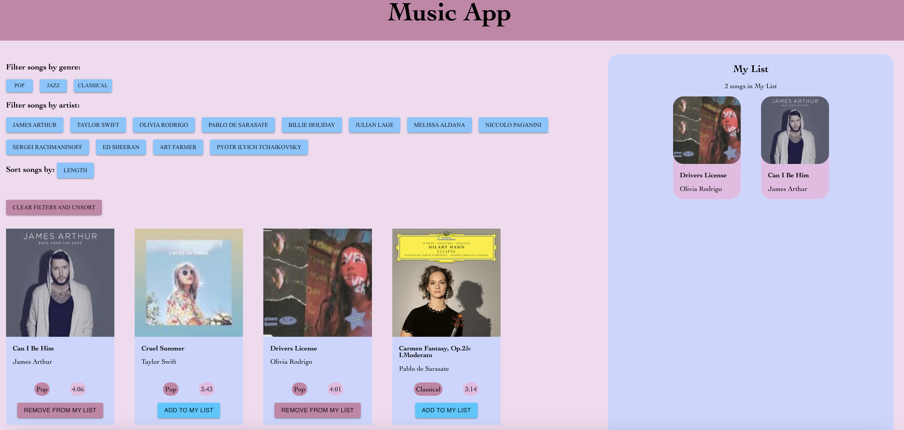

Project Introduction
In this project, the goal was to make an interface for users to select items out of a list, which then aggregates them using React. The project can be divided into two parts. The first section involves conducting a competitive analysis of existing websites to understand how organizations design interfaces to organize and aggregate information. The second section entails implementing the React app based on insights gained from the competitive analysis.The decision was made to develop the React app as a music platform, enabling users to sort, filter, and add songs to their personal lists.
Competitive Analysis of Websites
In order to have a better idea of what features in a website would successfully organize information that is pertinent to the user, three different websites with a favoriting funtion were selected to perform a competitive analysis. With the intention to create a music website, two of the three websites chosen for the analysis were music related (Spotify and Apple Music), and the third website was a website unrelated to music (GoodReads) in order to gain a wider range for inspiration and contrast. The competitive comparison chart below shows the factors related to the favoriting function, and whether each of the website has the factor.
Competitive Comparison Chart:
| Feature | Spotify | Apple Music | GoodReads |
|---|---|---|---|
| Sort by Recently Added | ✓ | ❌ | ✓ |
| Sort by Recently Played/Read | ✓ | ❌ | ✓ |
| Sort by Playlist Name (alphabetically) | ✓ | ❌ | ❌ |
| Sort by Title, Author/Artist (alphabetically) | ❌ | ✓ | ✓ |
| Sort by Album Name (alphabetically) | ❌ | ✓ | ❌ |
| Sort by Genre (alphabetically) | ❌ | ✓ | ❌ |
| Sort by Creator | ✓ | ❌ | ❌ |
| Sort by Length | ❌ | ✓ | ✓ |
| Filter by Playlists/Shelves | ✓ | ❌ | ✓ |
| Filter by Albums | ✓ | ❌ | ❌ |
| Filter by Artists/Author | ✓ | ✓ | ❌ |
| Filter by Favorites | ❌ | ✓ | ❌ |
There were features that were more successful than others for each of the three websites. For Spotify, the sorting by recently played may be the most successful feature. To follow a well designed visual hierarchy, important information should be at the top of the screen. Intuitively, users are more likely to listen to songs that they listened to recently than songs that they listened to in the past. Therefore, having the most recently played playlist at the top of the screen would perhaps be most successful. On the other hand, filtering by album may be the least successful feature. This is because the playlist contains all the songs that a user likes, while an album may not contain all the songs that a user likes. It is more likely that a user would want to listen to the songs in the playlist because those are the songs that they chose for themselves. Therefore, filtering by playlist may be more used than filtering by albums. In other words, this feature may not be used as much as the other features. For Apple Music, sorting by length may have been the most successful feature. This is because the addition of this feature may have the most effect on user control in this website/app. More specifically, while the title and artist of the song can be searched in the search function of the website, which could perhaps be a faster way of accessing a specific song based on title/artist than by sorting, a song cannot be searched based on its length in the search function. Therefore, the feature that sorts songs by their length adds an additional control for users. On the other hand, sorting by genre may not be the most successful feature here. This is because the users would have to scroll to the bottom of the list of all songs to get an idea of what genres there are, and this would be less efficient than if the songs are filtered by genre. For GoodReads, sorting by length may be the most successful feature for the same reason mentioned for Apple Music. In addition, it may be that this feature would be more useful for this particular website because users may want to search for books that are suitable to read in a specific period of time. On the other hand, the least successful feature may be the sorting by recently read. This is because it is most likely that the user would enter the review and the date they finished reading the book at the same time, and intuitively it is unlikely that a user would reread a book in a short period of time, unlike for songs.
List of features that I will attempt to implement:
- Filtering by genre
- Filtering by artist
- Sorting by length
- Aggregating liked elements
Implementation
This react app allows the user to easily look for songs by filtering and sorting, as well as add songs they like to their own list. More specifically, users can filter songs by genre and artist, and sort songs by length. The filter and sort function can work in combination, and both the filter and sorts can be cancelled by clicking on a button. The user can add a song to their list as well as remove a song from their list. A song can be added to their list only once, and after they clicked on the "Add to My List" button for a particular song, this button would change into a "Remove from My List" button.
The zip file of the code for this react app can be accessed here. The github page of the React app can be accessed here.
Conclusion
Through the process, I gained proficiency in discerning the nuanced intricacies of design elements utilized by industry-leading designers, allowing me to effectively recognize both the subtleties that elevate user experience and the shortcomings that hinder it. Additionally, I acquired experience in implementing a reactive framework for frontend development, to create responsive and interactive user interfaces that adapt to varying user interactions by using interface components and tying the components to an internal data state.